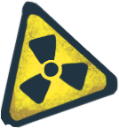
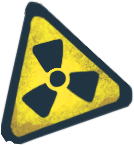

误会了！他们没有辐射危害
高压线、变电站人们经常见，但是又都有点担心，除了怕被电，还担心被辐射。这种说法流传已久，最近又在网上热传，并且还列出了对身体的几大危害，比如造成儿童白血病，诱发癌症，引发流产和胎儿畸形等等，弄得一些居民见了就害怕。那么这些说法是真的吗？ 什么是辐射？ 「辐射」依其能量的高低及电离物质的能力分类为 电离辐射和 非电离辐射。 （1） 电离辐射 电离辐射所携带的能量大于10电子伏特(eV)，可以将原子或分子电离、打断化学键。由于细胞由原子组成，电离作用可以引致癌症。电离辐射引致癌症的概率取决于辐射剂量率及接受辐射生物之感应性(此处，大写加粗，是电离辐射！电离辐射！电离辐射！)。α、β、γ辐射及中子辐射均可以加速至足够高能量电离原子。 [三种电离辐射之穿透性。α粒子可被纸张阻停。β粒子可被铝片阻停。γ射线在穿越铅屏时部分被阻。] （2） 非电离辐射 非电离辐射之能量较电离辐射弱。非电离辐射不会电离物质，而会改变分子或原子之旋转，振动或价层电子轨态。 而这篇文章的主角「电磁辐射」就是非电离辐射。 高压输电线路对人体有没有害？ “高压输电线路有电磁辐射，坚决抵制！！” ““呵呵” 很多人“谈辐射而色变”，电磁辐射也在恐惧的范围之内 高压线是怎样的存在？ 敲黑板划定义了，根据国家标准GB/T2900.50-2008定义2.1中的601-01-27，高[电]压通常指超过低压的电压等级，特定情况下，指电力系统中输电的电压等级。而低压是用于配电的交流系统中1000V及以下的电压等级。 按照高矮个排队，中国的高压代表队目前主要有1000kV，750kV，500kV，220kV，110kV，35kV，10kV这几位。 500kV及以上的高压电可以大容量远距离输送，好比高速公路，一般都远离人烟，用铁塔输电。而220kV及以下就是我们在城市中经常见到的，它们用铁塔或水泥杆输电，也会有深埋地下的高压电缆，至于10kV和35kV的则几乎每个居民小区周围都缠绕着若干。 这兄弟几个通力配合，才能把远方生产的电能源源不断地送到我们周围的各类电器上，让我们的生活变得多彩便利。但是要注意啦！所有高压等级的电都能瞬间将人“火葬”，所以，千万不要以为水泥杆就不危险。 科学揭秘高压线的真相 理论分析就进行到这里吧，毕竟动动嘴皮子谁都会，老同志告诉我们，实践是检验真理的唯一标准。 据华北电力大学教授崔翔介绍，高压线产生的电场和磁场是感应电场、感应磁场，因为它的波长非常长，所以不会像电磁辐射那样被人体直接吸收，但是会在人体内感应出电流来，这个感应电流我们需要控制。控制就需要量化，科学上一般用电场强度（单位，伏每米，V/m）和磁感应强度（单位，特斯拉，T）来衡量电场强度和磁场强度。 国际非电离辐射防护委员会曾在1998年发布了一个导则，规定工频电场强度对公众的安全值是5000V/m，工频磁感应强度对公众的限值是100mT。 本着安全第一的原则，目前中国对高压输电线路电磁环境的评价是参照《500kV超高压送变电工程电磁辐射环境影响评价技术规范》(HJ/T24-198)居民区工频电场限值和磁感应强度限值设定的，即居民区工频电场强度≤4000V/m，磁感应强度≤100。嗯，就是这么苛刻，这么任性！